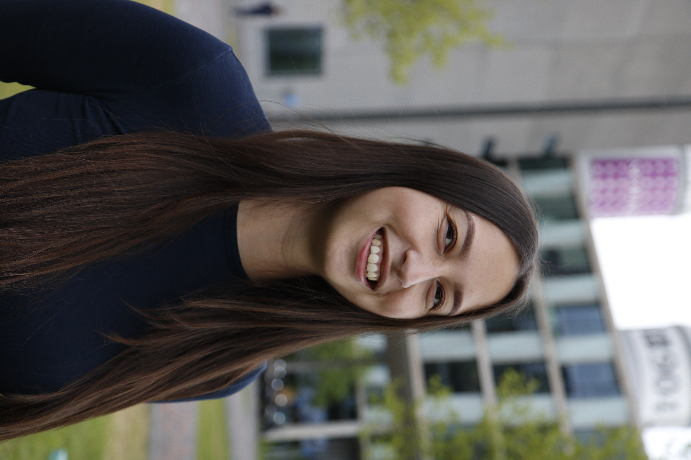
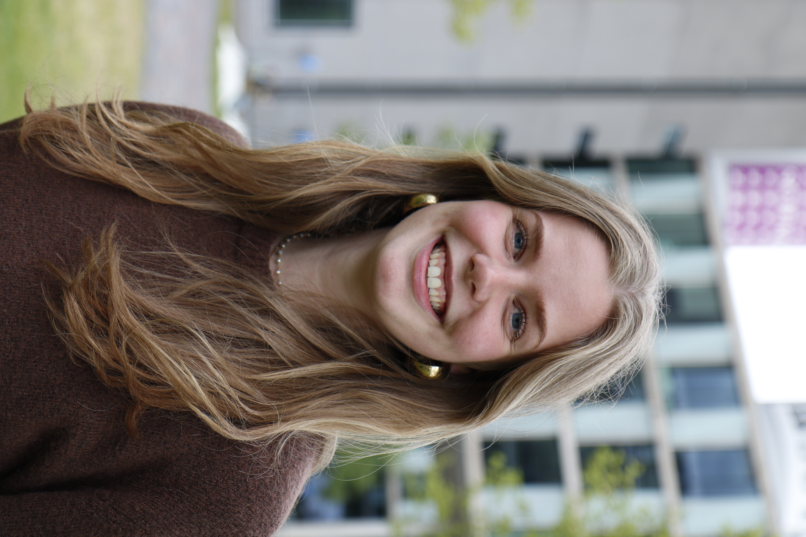
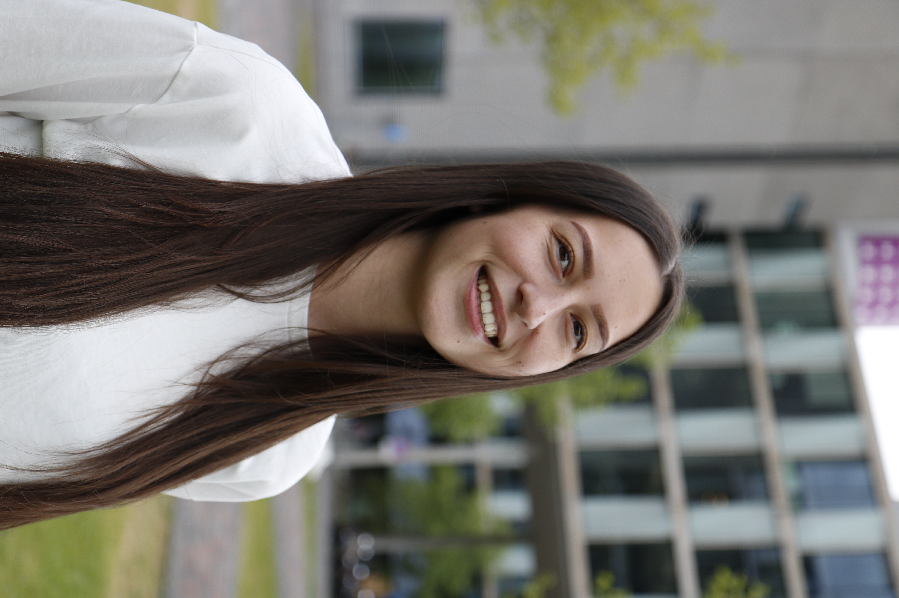
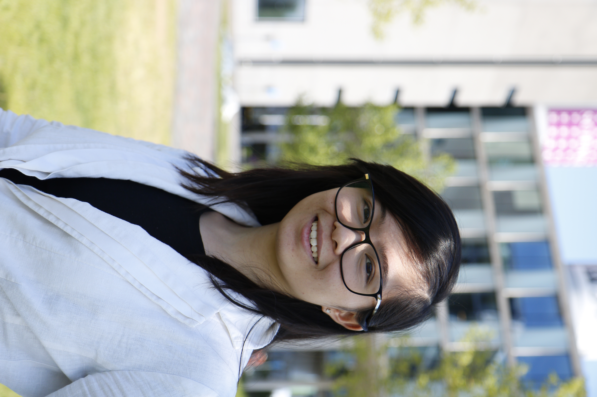
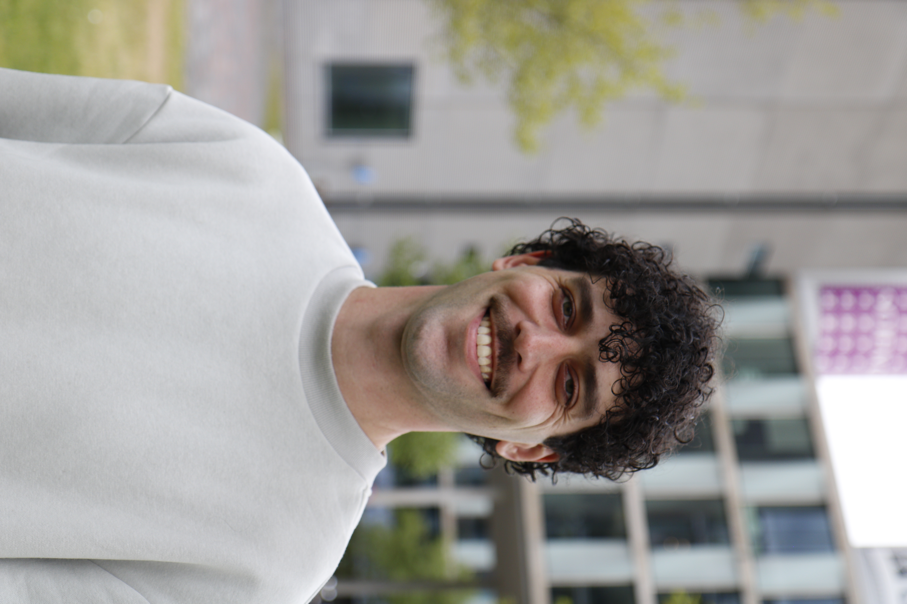
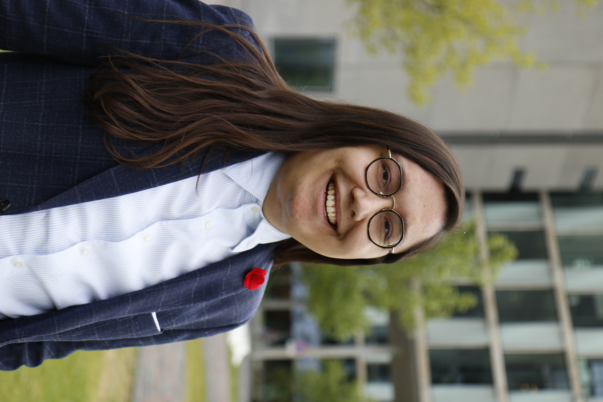

Student Council elections 2026
 (Voor de Nederlandse versie van deze pagina, ga naar: http://liefvoorjou.nl/stem)
(Voor de Nederlandse versie van deze pagina, ga naar: http://liefvoorjou.nl/stem)
From May 11th - 19th, the UvA Student Council elections are taking place. On this page you find more information about LIEF’s candidates and our plans for next academic year. The following URL brings you to the electronic ballot: stem.liefvoorjou.nl.
Our plans
This is a short overview of our plans for next year.
Education quality
First and foremost, we are here to learn. The quality of education must therefore be maintained at a high standard. Proper evaluation of teaching is crucial for this, and students are also entitled to feedback. In addition to core courses, students should have the opportunity to further develop themselves through extracurricular subjects and activities.Care for student well-being
Studying can be demanding. When things aren’t going so well, support should be readily accessible. That’s why student psychologists and student counsellors should also be available at Science Park. Especially in cases of study delays, the university has a supportive role to play. We also want to see greater attention paid to social safety.Good facilities
In order to study effectively at Science Park, the facilities must also be properly arranged. We would like to see sufficient study spaces, well-equipped teaching rooms, and an affordable canteen.Strong coparticipation
Students must be informed about, and have a say in, important faculty decisions.Our candidates
The following candidates are ready to represent you next academic year.

1. Vivienne
My name is Vivienne, and I have been studying at Science Park for the past four years. During this time, I have noticed how small things can make a big difference in your daily experience as a student: having a good place to study, an affordable meal between classes, whether or not attendance is mandatory, or having the possibility to rewatch a lecture. At the same time, there are also larger issues that affect every student, such as the quality and accessibility of education. That is why I want to dedicate myself next year within the student council to policies that truly reflect the needs of students.
2. Evie
Hii! My name is Evie de Wijs. I’ve been walking around Science Park for four years now, yet it was only in the past year that I became familiar with the Student Council. How long is the grading deadline actually? What are the rules regarding the use of AI? And when will there finally be cheaper sandwiches in the cafeteria? These are the kinds of questions the Student Council can answer or actively works on, while many students are still unaware of its role and impact.This year, I want to work on increasing the visibility of the Student Council so that, together, we can build broader support for student interests. In doing so, we can push for innovative education, improved facilities, and more opportunities for every student!.

3. Amanda
My name is Amanda Jansen and I have been studying at Science Park for four years. During my time here, I have come to realise that university is about much more than just attending classes. It is precisely the freedom to develop yourself more broadly that makes studying worthwhile. At the same time, I see that this is not always guaranteed and is sometimes under pressure due to a focus on study efficiency or restrictive regulations. Therefore, I want to dedicate myself this coming year within the student council to policies that do not limit students, but instead invite them to be more than their grades. In particular, I will advocate for more room for internships and research projects within the curriculum, and better support from the university for students who take extra courses or pursue a double degree.
4. Elissa
Hello hello! My name is Elissa and I am currently also a member of the faculty student council as secretary. During the year it became clear to me that there is still a lot to be done in education at our faculty. Because I consider education for everyone to be extremely important, I want to focus on continuing my current portfolio, namely course evaluations, in the coming academic year.
5. Jeroen
Hello! My name is Jeroen and for the past couple of years I've been studying at Science Park, often with a lot of fun. Throughout these years I've noticed plenty of room for improvements in the provided study materials in different courses and the facilities for students, both at Science Park and the digital environments we all use. This is why I am exited to commit myself to improving these aspects for all students at FNWI in the next academic year, so everyone can maximize their potential here.